月次報告システム 操作マニュアル
最終更新: 2026-11-27
この文書は、月次報告システムを使う人のための操作の説明です。 自分の役割の章だけ読めば使えます。各画面の上にある「？ この画面の使い方」を押すと、その画面の短い説明も開きます。
- 手順には、実際の画面の画像を付けています。画像の赤い枠が押す場所・入れる場所で、枠の番号は手順の番号と同じです。
- 画像の名前・案件・日付は、説明のための見本です。自分の画面では、自分の名前や案件が出ます。役割によって、出るボタンや欄が少し違います。
- PC の画像は横幅 1280 ピクセルの画面、スマートフォンの画像は iPhone ほどの幅の画面で撮っています。Firefox・Google Chrome・Chromium のどれでも、画面の中身は同じです（入力欄の形が少し違うことがあります）。
- 文字コードは UTF-8、改行は LF です。Linux の端末（
lessなど）でもそのまま読めます。画像も見るときは、ブラウザーで開いてください（0.7）。 - PC の操作は、Linux（Ubuntu など）の Firefox・Google Chrome / Chromium を前提に書いています（Windows・macOS でも同じです）。
操作マニュアルは 3 冊に分かれています。節の番号（「4.6」「9.4」など）は 3 冊で共通です。番号の節がこの冊に無いときは、ほかの冊を見てください。
| 冊 | 読む人 | 章 |
|---|---|---|
操作マニュアル（operation_manual.md） | 全員 | 0〜4、6.3、7.1、7.3、10〜14 |
課長・課長代理・主任向けマニュアル（manager_manual.md） | 課長・課長代理・主任 | 5、6（6.3 のほか）、7.2、8 |
システム運用マニュアル（admin_manual.md） | システム管理者・補佐 | 9 |
HTML（画像付き）は、それぞれ manual/ の同じ名前の .html です。
目次
- はじめる前に（PC の基本の操作。Linux の PC を使う人へ）
- はじめに（役割と 1 か月の流れ）
- ログイン
- ホーム画面とメニュー
- 月次報告を作る・出す（全員）
- 報告を確認する（課長・課長代理・主任）→ 別冊「課長・課長代理・主任向けマニュアル」
- 提出状況・横並び・検索・出力・臨時の調査（6.3 検索のほかは別冊「課長・課長代理・主任向けマニュアル」）
- コメントの一覧・要望・依頼・よくある質問（7.2 要望・依頼は別冊「課長・課長代理・主任向けマニュアル」）
- 課長の仕事 → 別冊「課長・課長代理・主任向けマニュアル」
- システム管理者・補佐の仕事 → 別冊「システム運用マニュアル」
- アカウント設定
- 困ったとき
- Linux の PC で使うときの注意（PDF・CSV・Excel 形式のファイル）
- 通勤定期代の精算（全員。月次報告とは別）
- 目標管理シート（全員。月次報告とは別）
0. はじめる前に（PC の基本の操作。Linux の PC を使う人へ）
この章は、Linux の PC に慣れていない人のための、ブラウザーとファイルの基本の操作です。慣れている人は飛ばしてかまいません。 ここでは、多くの会社で使われている Ubuntu（画面の左にアイコンが縦に並ぶ形）で説明します。ほかの Linux でも、名前が少し違うだけで同じように操作できます。
0.1 ブラウザーを開く
- キーボードの Super キー（Windows のマークが付いたキー。左下の
CtrlとAltの間）を押す。画面の左上の「アクティビティ」を押しても同じです。 - 画面の上に検索の欄が出るので、
firefoxと打つ（Chrome を使うときはchrome、Chromium はchromium）。 - 出てきたブラウザーのアイコンを押す（または
Enterキー）。
- 画面の左に並ぶアイコン（ドック）に、ブラウザーのアイコン（Firefox はオレンジ色の狐の絵）があれば、それを押しても開きます。
- よく使うときは、ドックのアイコンを右クリックして「お気に入りに追加」を選ぶと、いつもドックに出ます。
0.2 システムのアドレスを開き、ブックマークする
- ブラウザーで
Ctrl+Lを押す（上のアドレスの欄が選ばれ、青くなります）。 - システム管理者から知らされたアドレス（
https://で始まるもの）を打つか貼り付けて、Enterキーを押す。 - ログインの画面（2.1 の図）が出たら、
Ctrl+Dを押し、出てきた窓で「保存」（Chrome は「完了」）を押す。
次からは、アドレスの欄に「月次報告」と打ち始めると候補に出るので、それを押すだけで開けます。 アドレスを打ち間違えると、「サーバーが見つかりません」などと出ます。もう一度アドレスを確かめてください。
0.3 よく使うキーボードの操作
| したいこと | キー |
|---|---|
| 文字を大きくする・小さくする・元に戻す | Ctrl + +（プラス）・Ctrl + -（マイナス）・Ctrl + 0（ゼロ） |
| 画面を読み込み直す | F5（または Ctrl + R） |
| 1 つ前の画面に戻る | Alt + ←（このシステムでは、画面の中の「← ホーム」などのリンクで戻るほうが確実です） |
| 選んだ文字をコピーする・貼り付ける | Ctrl + C・Ctrl + V（端末の中では Ctrl + Shift + C・Ctrl + Shift + V） |
| 印刷する（PDF に保存する） | Ctrl + P（12.2） |
| ダウンロードした一覧を出す | Firefox は Ctrl + Shift + Y、Chrome / Chromium は Ctrl + J |
| 画面の中の言葉を探す | Ctrl + F |
0.4 日本語の入力と、半角の入力を切り替える
- ログイン ID・パスワード・6 桁のコードは、半角の英数字で入れます。日本語の入力のままだと、正しく入りません。
- Ubuntu では、
半角/全角キー（キーボードの左上）か、Super+Spaceで切り替えます。画面の右上に「あ」と出ていれば日本語の入力、「A」や「ja」と出ていれば半角の入力です。 - 報告の文（担当内容など）は、日本語の入力に切り替えて書きます。
0.5 ダウンロードしたファイルの置き場所
出力（6.4）で作った Excel 形式・CSV のファイルは、ふつう ホームの「ダウンロード」フォルダー（~/ダウンロード。英語の設定では ~/Downloads）に入ります。
- Super キーを押して
ファイルと打ち、「ファイル」（ファイルを見るアプリ）を開く。 - 左の一覧の「ダウンロード」を押す。
- 開きたいファイルをダブルクリックする（開き方は 12.3・12.4）。
ブラウザーからも開けます。Firefox は右上の下向きの矢印（ダウンロード）を押してファイルを押す、Chrome / Chromium は Ctrl + J でダウンロードの一覧を出して、ファイルの名前を押します。
0.6 席を離れるとき
報告は社外秘です。席を離れるときは、Super + L で画面をロックしてください（戻ったら、PC のパスワードを入れて解除します）。
このシステムからも、使い終わったら右上の「メニュー」→「ログアウト」でログアウトしてください。
0.7 このマニュアルを画像付きで読む
この文書（.md のファイル）を、テキストエディターや端末で開くと、画像は出ません（ という行が、画像の場所です）。
- システム管理者から「操作マニュアル.html」を受け取ったときは、それをダブルクリックすると、ブラウザーで画像付きで読めます。
- リポジトリから読むときは、端末で
python3 tools/lib/mdview.py docs/operation_manual.mdと打つと、ブラウザーで画像付きで開きます。
1. はじめに
1.1 役割
| 役割 | 主な端末 | 主にすること | 読む章 |
|---|---|---|---|
| 部下（課の社員） | 私物のスマートフォン | 月に 1 回、報告を作って出す。コメントに返信する。臨時の調査に答える | 2, 3, 4, 7, 10 |
| 確認者（課長代理・主任） | スマートフォン・PC | 課の報告を読み、コメントし、チェックする | 上に加えて 5, 6 |
| 課長（最終確認者） | PC・スマートフォン | 確認を完了にする。臨時の調査を作る。資料用に出力する。課の設定を決める | 上に加えて 8 |
| 人財管理者（人財管理部） | PC | 全課共通の臨時の調査を作り、結果（集計）を見る | 2, 3, 9.9, 10 |
| システム管理者 | PC | 共通の項目・課・ユーザー・案件の管理。記録の確認 | 2, 3, 9, 10 |
| システム管理者補佐 | PC | 管理者が対応できないときの代行。報告の中身は見ない | 2, 3, 9, 10 |
PC を使う人は、先に 0 章と 12 章も読んでください。
通勤定期代の精算（13 章）と目標管理シート（14 章）は、役割に関係なく全員が使えます（どちらも月次報告とは別の機能です）。
管理の権限と、報告を見る権限は別です。システム管理者でも、自分が確認者でない課の報告の中身は見られません。
1.2 1 か月の流れ
- 部下が「今月の報告を作る」で報告を作る。前月の内容が入った状態で始まるので、変わったところだけ直して提出する。
- 確認者が報告を読む。問題がなければ「チェック済みにする」。分からない点は項目ごとにコメントで聞く。
- コメントを受けた部下は、ホームの「回答待ち」から返信する。報告に追記してもよい。
- 確認者は返信を読み、コメントを「解決」にしてチェックする。
- 課長が「確認を完了にする」。必要なら課の状況をまとめて見て、資料用に出力する。
報告の状態は「下書き → 提出済み → 確認完了」の 3 つです。差し戻しはありません。 提出したあとも本人が直せます。直すと変更の履歴が残り、確認者に「更新あり」と出ます。
1.3 守ること
- 客先名・個人名・固有名詞は書かないでください。客先名らしい言葉を入れると黄色の注意が出ます（保存は止めません）。
- 出力したファイルは社外秘です。
- 出力は PC から行います（スマートフォンにファイルを残さないため）。
2. ログイン
2.1 ふだんのログイン
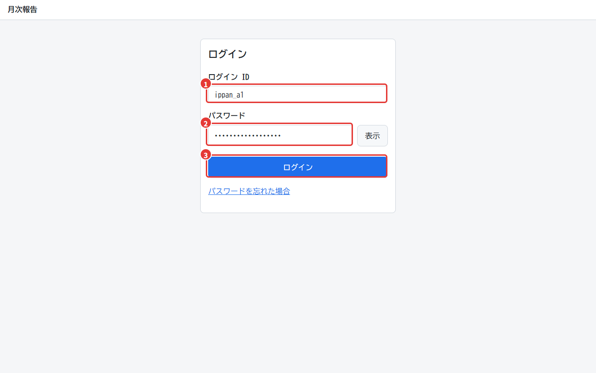
- ログイン画面の「ログイン ID」の欄を押して、ログイン ID を入れる（半角の英数字。0.4）。
- 「パスワード」の欄にパスワードを入れる。入れた文字は「•」で隠れます。打ち間違いを確かめたいときは、右の「表示」を押すと見えます。
- 「ログイン」を押す（
Enterキーでもかまいません）。

2 段階認証のコードを聞かれたら、次のようにします。
- スマートフォンの認証アプリ（Google Authenticator など）を開き、このシステムの欄に出ている 6 桁の数字 を「認証アプリの 6 桁のコード」の欄に入れる（数字の間の空白は入れなくてかまいません）。
- 「この端末を 90 日間記憶する」にチェックが付いていることを確かめる（既定でオン）。付けておくと、その端末では 90 日間コードを聞かれません。共用の PC では外してください。
- 「確認」を押す。

ホームの画面（3 章）が出れば、ログインできています。
- コードの画面は 5 分以内に済ませてください。過ぎると「最初からやり直してください」と出ます。
- 認証アプリの数字は 30 秒ごとに変わります。変わる直前に入れて「コードが違います」と出たら、新しい数字を入れ直してください。
- 認証アプリが使えないときは、予備のコード（
xxxx-xxxxxxの形）を同じ欄に入れます。予備のコードは、どれも何度でも使えます（人に教えないでください。漏れたときは、アカウント設定の「予備のコード」で作り直してください）。
2.2 はじめてのログイン（2 段階認証の設定）
はじめてログインすると、2 段階認証の設定の画面が出ます。設定が済むまで、ほかの画面は使えません。
はじめてのログインは、スマートフォンで行ってください。 先にスマートフォンに認証アプリを入れておくと、ボタン 1 つで登録できます。PC でログインしたときは、画面に「いまは PC で開いています」と、スマートフォンで開くアドレスが出ます。スマートフォンでそのアドレスを開き、同じログイン ID とパスワードでログインして設定してください。設定が終わったら、PC でもう一度ログインします。
PC でログインしたとき
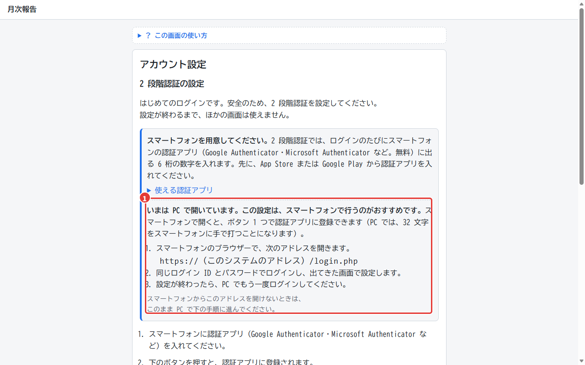
- 「いまは PC で開いています」の案内（図の 1）に、スマートフォンで開くアドレスが出ます。このアドレスをスマートフォンのブラウザーで開き、下の「スマートフォンで設定するとき」に進んでください。
スマートフォンでアドレスを開けないときは、PC のまま、次のように設定します。

- スマートフォンの認証アプリで「セットアップキーを入力」（アプリによっては「キーを入力」「手動で入力」）を選び、アカウント名に「月次報告」など分かる名前を、キーに画面の 32 文字（図の 1。空白は入れなくてかまいません）を入れて、種類は「時間ベース」にして追加する。「認証アプリに登録する」のボタンは、PC では働きません。
- 認証アプリに出た 6 桁の数字を「6 桁のコード」の欄に入れる。
- 「設定する」を押す。このあとは、下の 4. から同じです。
スマートフォンで設定するとき

- スマートフォンに認証アプリ（Google Authenticator・Microsoft Authenticator など。App Store または Google Play から無料で入れられる）を入れておく。
- 「認証アプリに登録する」を押す。認証アプリが開き、登録してよいか聞かれるので、「追加」「保存」などを押す。うまくいかないときは、その下の文字（セットアップキー）を、上の「PC で設定するとき」の 1. と同じように手で入れます。「セットアップキーをコピー」を押すと、空白なしでコピーできるので、認証アプリに貼り付けられます。
iPhone の方へ: iPhone では、「認証アプリに登録する」を押すと、最初から入っている「パスワード」アプリが開きます（Microsoft Authenticator などは開きません）。「パスワード」アプリをそのまま使うときは、確認コードを追加して保存し、出た 6 桁の数字を「6 桁のコード」の欄に入れます。Microsoft Authenticator を使うときは、下の「iPhone で Microsoft Authenticator を使うとき」の手順で、手で登録してください。画面の「iPhone の方へ」にも同じ案内があります。
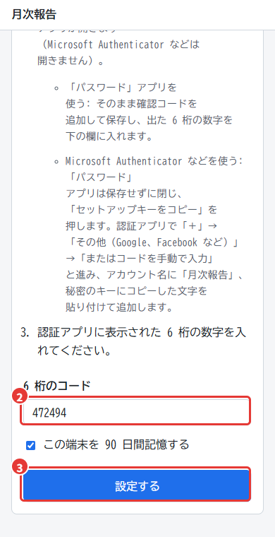
- ブラウザーに戻り、認証アプリに出た 6 桁のコードを「6 桁のコード」の欄（図の 2）に入れて「設定する」（図の 3）を押す。
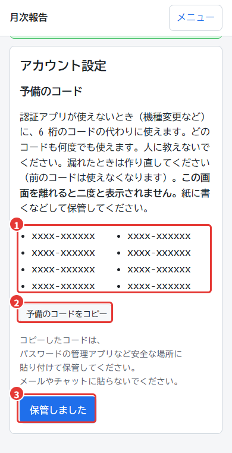
- 予備のコード（図の 1）が一度だけ表示されます。紙に書くなどして、スマートフォンとは別の場所に保管してください。「予備のコードをコピー」（図の 2）を押すとまとめてコピーできるので、パスワードの管理アプリなどに貼り付けて保管してもかまいません（メールやチャットには貼らないでください）。
- 保管したら「保管しました」（図の 3）を押す。

管理者から仮のパスワードを受け取った人は、ログインのあとにパスワードの変更を求められます。
- 「新しいパスワード（10 文字以上）」に、新しいパスワードを入れる。思いつかないときは「自動で作る」を押すと作られます（「コピー」で写して、パスワードの管理アプリなどに保管してください）。
- 「新しいパスワード（確認）」に、同じパスワードをもう一度入れる。
- 「変更する」を押す。
iPhone で Microsoft Authenticator を使うとき（手で登録する）
iPhone では「認証アプリに登録する」のボタンで Microsoft Authenticator は開かないので、セットアップキーをコピーして、Microsoft Authenticator に手で登録します。はじめてのログインの設定の画面（スマートフォンで開いたもの）で行います。
- App Store で「Microsoft Authenticator」を入れておく（無料）。はじめて開いたときにサインインを求められたら、「スキップ」を押してかまいません（Microsoft のアカウントは要りません）。
- Safari の設定の画面で、「セットアップキーをコピー」を押す（「コピーしました」と出ます）。間違えて「認証アプリに登録する」を押して「パスワード」アプリが開いたときは、何も保存せずに閉じて Safari に戻ります。
- Microsoft Authenticator を開き、右上の「＋」を押す。
- 「その他（Google、Facebook など）」を選ぶ。
- カメラの画面が出るので、「またはコードを手動で入力」を押す。
- 「アカウント名」に「月次報告」など分かる名前を、「秘密キー」に 2. でコピーした文字を貼り付けて、「完了」を押す。
- 一覧に「月次報告」が増え、6 桁の数字が出ることを確かめる。
- Safari に戻り、その 6 桁の数字を「6 桁のコード」の欄に入れて「設定する」を押す。このあとは、上の「スマートフォンで設定するとき」の 4. から同じです（予備のコードを保管する）。
- 数字は 30 秒ごとに変わります。「コードが違います」と出たら、新しい数字を入れ直してください。
- 数字が合わないときは、iPhone の「設定」→「一般」→「日付と時刻」の「自動設定」がオンになっているかを確かめてください（時刻がずれると数字が合いません）。
- アプリの言い方（「秘密キー」など）は、アプリの版によって少し違うことがあります。
- 次からのログインでは、Microsoft Authenticator を開き、「月次報告」の 6 桁の数字を入れます。
使える認証アプリ
「時間ベース」の 6 桁のコードを出すアプリなら使えます。迷ったら、iPhone・Android のどちらでも同じ名前で入れられる Google Authenticator か Microsoft Authenticator を選んでください。設定の画面の「使える認証アプリ」を開いても同じ一覧が見られます。
| アプリ | iPhone | Android | 備考 |
|---|---|---|---|
| Google Authenticator | ○ | ○ | 無料 |
| Microsoft Authenticator | ○ | ○ | 無料。Microsoft のアカウントがなくても使える |
| IIJ SmartKey | ○ | ○ | 無料。画面が日本語 |
| Authy | ○ | ○ | 無料 |
| iPhone の「パスワード」 | ○ | × | iPhone に最初から入っている（iOS 18 以降。iOS 15〜17 は「設定」の「パスワード」） |
| Aegis | × | ○ | 無料 |
- SMS でコードを受け取る方式や、ボタンを押して承認するだけの方式には対応していません。
- 機種変更のとき、アプリによってはコードを新しいスマートフォンへ引き継げません。そのときは予備のコードでログインし、アカウント設定で 2 段階認証を設定し直します（10.）。
2.3 自動でログアウトされるとき
- 最後の操作から 30 分たったとき
- ログインから 12 時間たったとき
- システムの更新や、暗号化の鍵の入れ替えが行われたとき（もう一度ログインすれば使えます）
入力の途中でログアウトされないよう、長い入力は「下書き保存」をこまめに押してください（報告の画面は自動でも保存します。4.2）。
ログアウトされたあとに「保存」「提出する」などを押すと、送らずに「ログインが切れたため、送信していません」と出ます。入力は画面に残っています。「別の画面でログインする」を押してログインし、元の画面に戻って、もう一度押してください。
2.4 パスワードを忘れたとき

- ログイン画面の「パスワードを忘れた場合」を押す。
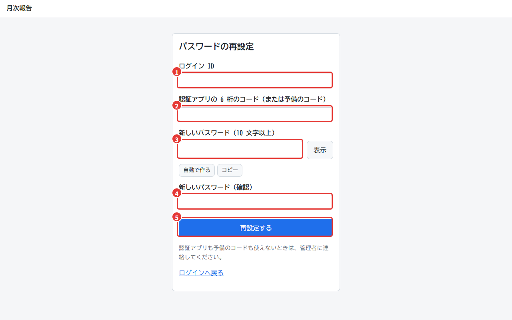
- 次のように入れて、「再設定する」（図の 5）を押す。
- 図の 1: ログイン ID
- 図の 2: 認証アプリの 6 桁のコード（または予備のコード）
- 図の 3・4: 新しいパスワード（10 文字以上）を 2 回
パスワードは、好きな言葉をつなげた文の形にすると覚えやすくなります。 認証アプリも予備のコードも使えないときは、管理者に連絡してください（9.4）。
2.5 ロックされたとき
ログインに 10 回続けて失敗すると、15 分ほどログインできなくなります。時間をおいてからやり直してください。急ぐときは管理者に解除を頼めます。
3. ホーム画面とメニュー
3.1 ホームに出るもの

名前の下の「あなたの役割と権限」に、自分の役職・役割と、課ごとの担当が出ます（本人にだけ見えます）。「できること」を押すと、自分にできることの一覧が開きます。
ホームには、今やることが上から並びます（図は部下のホーム。図の 1 が報告の欄、図の 2 が回答待ちのコメントの欄、図の 3 がメニューです）。
| 欄 | 出る人 | 内容 |
|---|---|---|
| （年月）の報告 | 全員 | 今月の報告の状態（未作成・下書き・提出済み・確認完了）と締め日。「今月の報告を作る」または「続きを書く」 |
| 前月の報告がまだです | 全員 | 前月の報告が未作成・下書きのときだけ |
| 回答待ちのコメント | 全員 | 自分の報告に来た、まだ返信していないコメント |
| 臨時の調査 | 対象の人 | まだ答えていない調査と期限 |
| 更新のお知らせ | 全員 | システムの変更のお知らせ |
| （課名）（年月）（確認） | 確認者・課長 | 未チェックの件数、回答ありの件数、未提出の人数。「未チェックを順に見る」「提出状況」 |
| 要望・依頼の回答 | 課長・確認者 | 出した要望・依頼にシステム管理者から返信が来たとき |
- 締め日まで 3 日以内になると、締め日が赤で出ます。
- 締め日まで 3 日以内でまだ出していないとき、前の月の締め日を過ぎてまだ出していないとき、課長・確認者から提出を促されたときは、どの画面でも上に黄色の知らせが出ます（報告の作成の画面を除く）。押すと、その月の報告を開きます。提出すると消えます。メールは届きません。
- 「今月」は、締め日までは前月、締め日を過ぎると当月です（月次報告は前月の状況を月初に報告するため）。
- メンテナンス中は、ログインできません（ログインの画面に知らせと終わる日時が出ます）。ログインしている途中でメンテナンスが始まると、次に画面を開いたときにログアウトされます。入力中の内容は、送る前に止まるので画面に残ります。終わってからログインし直して保存してください。
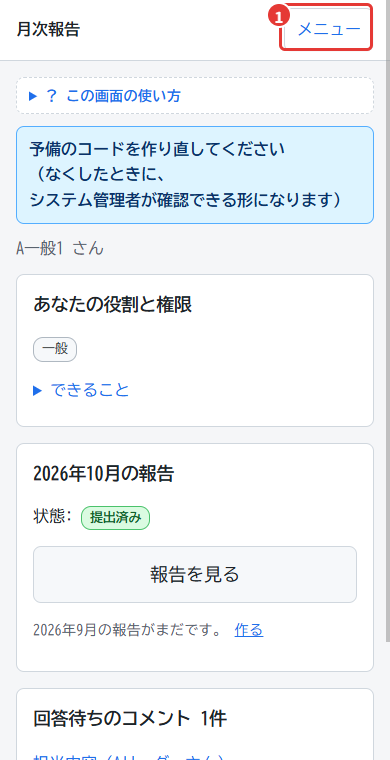
スマートフォンでも、同じ欄が縦に並びます。メニューは右上の「メニュー」（図の 1）です。
3.2 メニュー
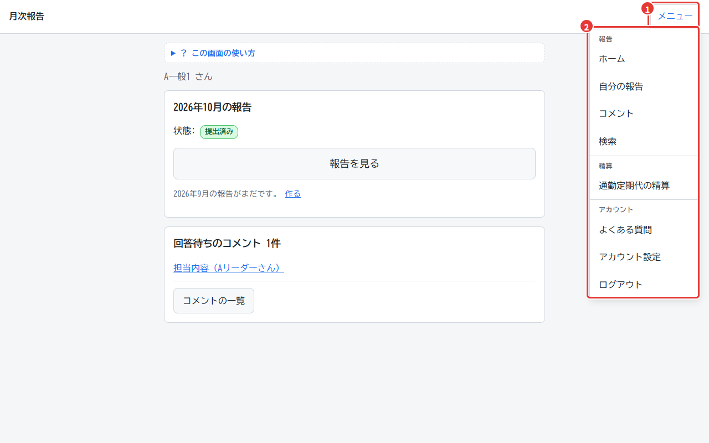
- 画面右上の「メニュー」を押す。
- 開いたメニュー（図の 2）から、使いたい画面を押す。閉じるときは、もう一度「メニュー」を押します。
見出しごとに、使える画面だけが出ます。
| 見出し | 画面 | 使える人 |
|---|---|---|
| 報告 | ホーム、自分の報告、コメント、検索 | 全員 |
| 確認 | 提出状況 | 確認者・課長・管理者 |
| 確認 | 臨時の調査、出力 | 課長 |
| 確認 | 要望・依頼 | 確認者・課長 |
| 管理 | 管理のトップ | 「管理」の画面を 1 つ以上使える人 |
| 管理 | 課の管理 | 課長 |
| 管理 | 項目マスタ | 課長・項目管理者・管理者 |
| 管理 | コメントの定型文 | 確認者・課長 |
| 管理 | メッセージ | 管理担当の課の課長・補佐 |
| 管理 | 要望・依頼、更新のお知らせ、案件の管理、組織・ユーザー、記録・削除データ | 管理者・補佐 |
| 目標管理 | 目標管理シート（14 章） | 全員 |
| 精算 | 通勤定期代の精算（13 章） | 全員 |
| アカウント | よくある質問、アカウント設定 | 全員 |
ログアウトは、メニューのいちばん下の「ログアウト」です。
3.3 この画面の使い方

- 画面の上の「？ この画面の使い方」を押すと、その画面の短い説明が開きます。
- 説明の最後の「よくある質問」を押すと、その画面についての質問と答えが並ぶ画面（7.3）に移ります。
4. 月次報告を作る・出す（全員）
4.1 報告を作る

- ホームの「今月の報告を作る」（下書きがあれば「続きを書く」、前月の分は「作る」）を押す。
- 前月の報告の内容が入った状態で開きます。変わったところだけ直してください。
- 最後に「提出する」を押す（4.6）。
作れるのは、当月と過去 3 か月までの報告です。
4.2 楽に出す方法
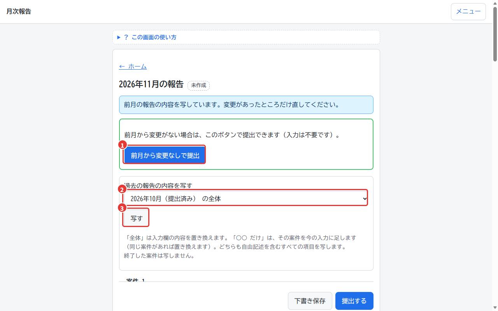
- 前月から変更なしで提出（図の 1）: 先月から何も変わっていなければ、このボタンだけで提出できます。入力はいりません。
- 過去の報告の内容を写す（図の 2・3）: 写したい月（とその範囲）を図の 2 で選んで、「写す」（図の 3）を押すと、その月の内容が入ります。「全体」は入力欄の内容を置き換えます。「○○ だけ」は、その案件を今の入力に足します。
4.3 入力のしかた

- 報告は「案件ごとの欄」と「報告全体」の欄に分かれています。案件ごとの欄は、案件（図の 1）を選んでから、担当内容（図の 2）・作業フェーズ（図の 3）などを入れます。
- 一覧から選ぶ欄（図の 1・3）は、押すと選択肢が出るので、押して選びます。丸い印の選択肢（ラジオボタン）は、文字のところを押しても選べます。
- 「必須」の札が付いた項目は入力が必要です。足りないと、提出のときに知らせます。
- 「社外秘」の札が付いた項目は、暗号化して保存されます。
- 入力が変わると 60 秒ごとに自動でも下書き保存します（画面の下に「自動保存しました 10:42」と出ます）。

項目によっては、ほかの答えに応じて出たり消えたりします。例: 進捗が「遅延あり」（図の 1）のときだけ「進捗の補足」（図の 2）が出ます。

客先名らしい言葉（「株式会社」など）を入れると、欄の下に黄色の注意（図の 1）が出ます。社内の案件コードや呼び名に書き換えてください（注意が出たままでも保存はできますが、提出の前に確認が出ます）。
4.4 案件を足す・外す
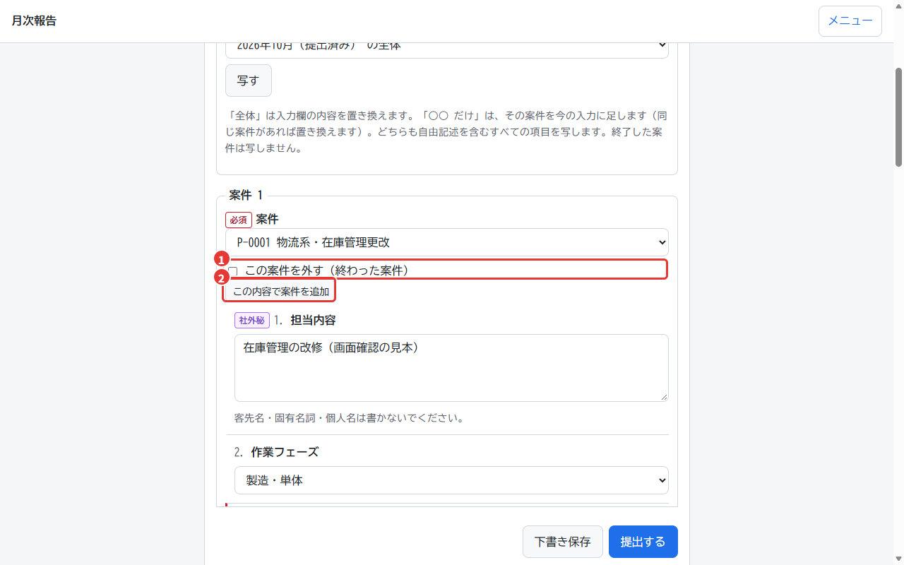
- 終わった案件は「この案件を外す（終わった案件）」（図の 1）にチェックを付けます。
- 「この内容で案件を追加」（図の 2）を押すと、その案件の内容を、下の「案件を追加するとき」の欄に写せます（案件は選び直します）。

- 新しい案件に入ったときは、いちばん下の「案件を追加するとき」の欄で案件（図の 1）を選んで入力します。もっと足すときは、保存すると欄が増えます。
- 案件がないとき（社内待機・研修など）は、案件で「案件なし 社内待機・研修など」（いちばん上）を選んで、担当内容などを書いてください。案件を選ばずに書くと、「案件を選んでください」と出て保存されません（書いた内容は残ります）。
- 選べる案件がないときは、課長か管理者に案件の登録を頼んでください。
4.5 スマートフォンで答える
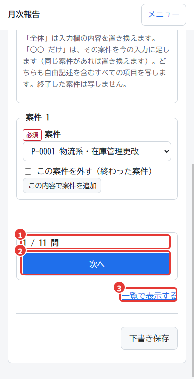
スマートフォンでは 1 問ずつ答えられます。
- 画面の下に、いま何問目か（図の 1。例: 「1 / 11 問」）が出ます。
- 答えたら「次へ」（図の 2）を押します。最後の問いまで進むと、答えを確かめて提出できます。
- 全部の項目を一度に見たいときは「一覧で表示する」（図の 3）で切り替えます。

一覧の表示から 1 問ずつに戻すときは、同じ場所のリンク（図の 1）を押します。
4.6 保存する・提出する
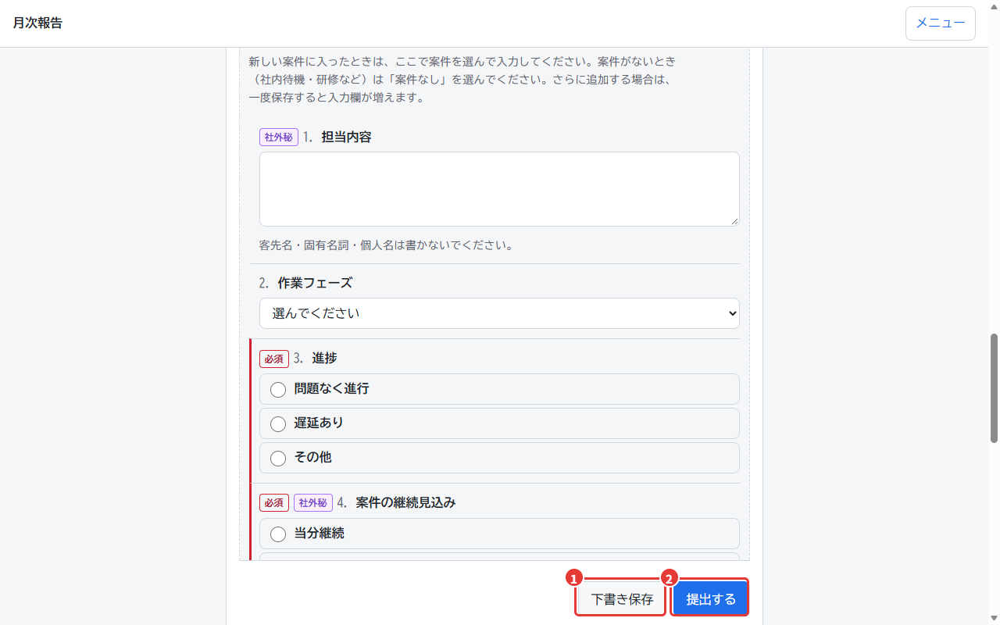
「下書き保存」（図の 1）と「提出する」（図の 2）は、画面の下にいつも出ています（下に動かさなくても押せます）。
- 途中で終えるときは「下書き保存」を押す。いつでも途中を保存できます。

- 入力が終わったら「提出する」を押す。
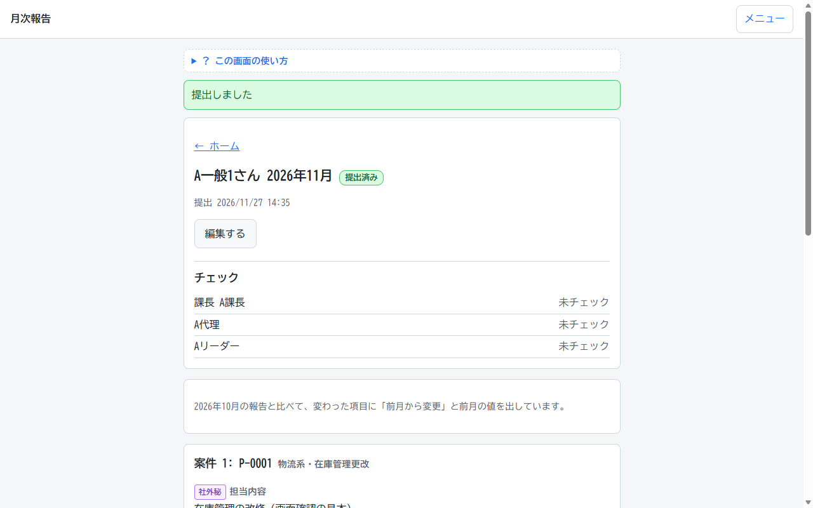
「提出しました」と出て、報告の詳細の画面に移れば、提出できています。必須の欄が空のときは、その欄の下に「入力してください」と赤で出ます（入れた値は残っているので、足して、もう一度「提出する」を押します）。
4.7 提出したあと
- 提出したあとも、本人が直せます。報告の詳細の画面の「編集する」を押して直し、「保存」すると変更の履歴が残り、確認者に「更新あり」と知らせます。出し直しの操作はいりません。
- 確認完了になった報告は直せません。
- 下書きは「下書きを削除」で消せます。
4.8 自分の報告を見る

メニューの「自分の報告」に、月ごとの状態（下書き・提出済み・確認完了）、回答待ちのコメントの数、チェックの数（例: チェック 3/3）が出ます。行（図の 1）を押すと報告を開きます。
4.9 コメントに返信する
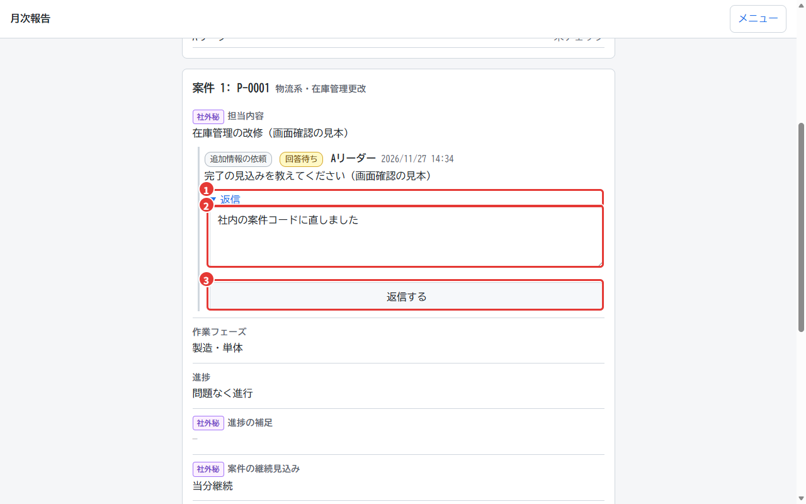
- ホームの「回答待ちのコメント」か、メニューの「コメント」から、コメントの付いた報告を開く。コメントの下の「返信」（図の 1）を押す。
- 開いた欄（図の 2）に返信を書く。報告の中身を直して答えてもかまいません。
- 「返信する」（図の 3）を押す。コメントの状態が「回答あり」になります。
コメントの種類は次の 3 つです。
| 種類 | 状態の流れ | 返事 |
|---|---|---|
| 追加情報の依頼 | 回答待ち → 回答あり → 解決 | 求められる |
| 認識の確認 | 回答待ち → 回答あり → 解決 | 求められる |
| 連絡 | 状態なし | いらない |
4.10 臨時の調査に答える

- ホームの「臨時の調査」から調査を開く。依頼元・期限・目的・結果の扱いが上に出ます。
- 質問に答えて「回答する」（図の 1）を押す。月次報告と同じ質問には、最新の報告の値が入っています。
期限の日までは答えを直せます。期限を過ぎると「この調査は締め切られました。」と出ます。
5. 報告を確認する（課長・課長代理・主任）
報告の確認（未チェックの報告・コメント・チェック・確認の完了・コメントの定型文）は、別冊「課長・課長代理・主任向けマニュアル」にあります。
6. 提出状況・横並び・検索・出力・臨時の調査
提出状況（6.1）・横並び（6.2）・出力（6.4）・臨時の調査の作成（6.5）は、別冊「課長・課長代理・主任向けマニュアル」にあります。
6.3 検索（全員）

対象月・課・選択式の値・キーワードで報告を探します。
- 対象月の範囲（図の 1）を選ぶ。
- 探す範囲（図の 2）を選ぶ。確認者・課長は「担当の課の報告」、それ以外の人は「自分の報告」の中から探します（部下の画面には、この欄は出ません）。
- キーワード（図の 3）を入れる（50 文字まで）。課・選択式の値でも絞れます。
- 「探す」（図の 4）を押す。
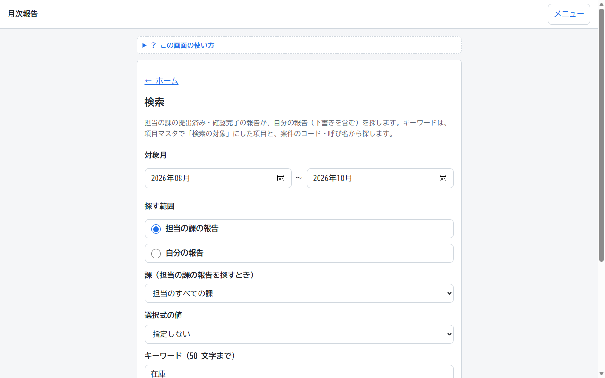
結果は下に並びます。押すと、その報告を開きます。
- キーワードは「検索の対象」の項目と、案件のコード・呼び名から探します。
7. コメントの一覧・要望・依頼・よくある質問
7.1 コメントの一覧（全員）
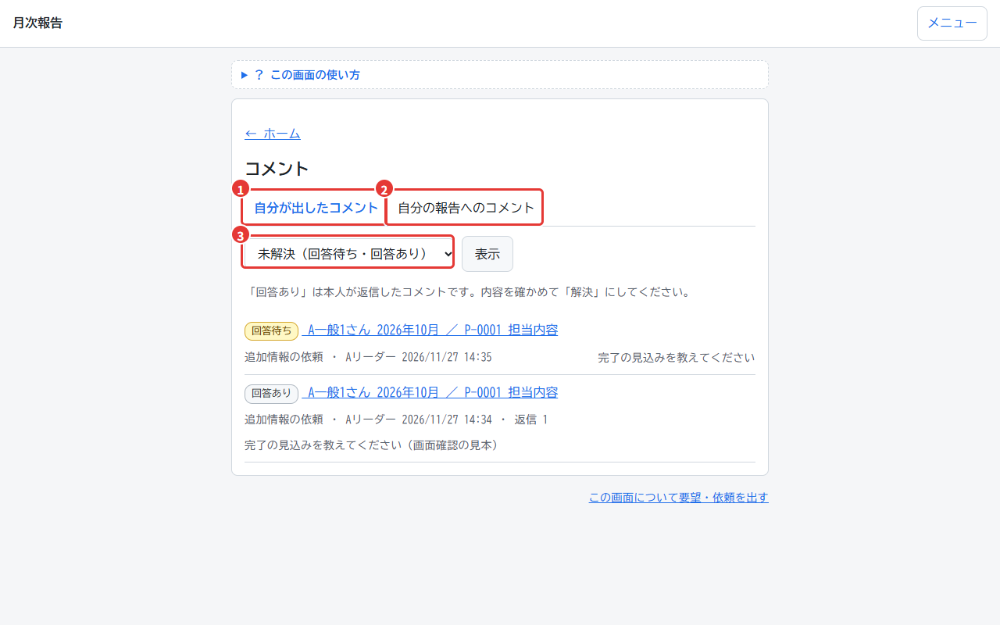
メニューの「コメント」に、自分の報告へのコメントと、自分が出したコメントが報告をまたいで並びます。
- 確認者・課長は「自分が出したコメント」（図の 1）と「自分の報告へのコメント」（図の 2）を切り替えて見ます（部下には「自分の報告へのコメント」だけが出ます）。
- 状態（図の 3）で絞り込んで「表示」を押します。
- 部下は「回答待ち」を探して返信します。
- 確認者は「回答あり」を探して解決にします。
- 行を押すと、そのコメントの付いた報告を開きます。
要望・依頼（7.2）は、別冊「課長・課長代理・主任向けマニュアル」にあります。
7.3 よくある質問（全員）

メニューの「よくある質問」に、使い方でよく聞かれることと答えが並びます。質問を押すと答えが開きます。
分野から選ぶ: 分野「システムの管理（システム管理者・補佐）」は、システム管理者・補佐にだけ出ます。何を聞けばよいか分からないときは、チャットの最初に出る分野（ログイン・報告の作成・コメントなど）のボタン（図の 2）を押すと、その分野の質問が並びます。近いものを押すと答えが出ます。「この画面の使い方」から開いたときは、その画面の分野が太く出ます。

チャットで聞く: 上のチャットの欄（前の図の 1）に知りたいこと（例: パスワードを忘れた、スマホを替えた）を入れて「送る」を押すと、近い質問の答え（この図の 1）が吹き出しで返ってきます。ほかにも近い質問があれば、ボタンを押すとその答えが出ます。答えを読んだら「解決した」（図の 2）「解決しない」（図の 3）を押します。「解決した」を押すと、チャットは開いたときの状態に戻ります。「解決しない」を押すと、関係がありそうな質問を出し、それでも見つからなければ、詳しく入れ直す・分野から選ぶ・質問として送る（課長・確認者）を案内します。言葉が少し違っても（「スマホ」と「スマートフォン」、「締切」と「締め日」など）探せます。見つからないときは、言葉を変えて入れるか、分野から選んでください。 「使い方がわからない」「教えて」のように、何について知りたいかが入っていないときは、「どのことについて知りたいですか？」と聞き返して分野のボタンを出します。 このシステムに関係のない質問（天気・趣味・ほかの社内手続きなど）には「その質問には返答できません。」、乱暴な言葉が入った文には「不適切な表現が含まれているため、返答できません。」と返します。どちらかが合わせて 5 回続くと、それからは返事をしません。システムの質問をするか、分野を選ぶと、また答えます。 チャットで聞いた質問と返した答えは、よくある質問をよくするために記録します（聞いた人も記録し、システム管理者と補佐が見られます。1 年で消えます）。 つらい・限界・眠れないなど、心の不調に関わる言葉が入っていたときは、気づかいの言葉を返します。一人で抱えずに、上司やシステム管理者に相談してください。 急病やけがなど、命や体に関わる急いだほうがよい状態が書かれていたときは、119 番に電話するよう案内します。少しでも危ないと感じたら、チャットではなく、すぐに 119 番に電話してください。 チャットに「ログインの有効期限が切れました」と出たときは、画面を開き直して、もう一度ログインしてください（30 分操作しないと、自動でログアウトします）。 病気や体のこと、家族のことなど、個人的な事情に触れる文には、チャットでは詳しく答えず、相談先を案内します（その文は記録しません）。報告や締め日のことで困ったときは、課長に相談してください。 返ってくる答えは、よくある質問に載っている文そのままです（AI が文を作ることはありません）。
答えが見つからないとき:
| 人 | すること |
|---|---|
| 課長・確認者（課長代理・主任） | 「解決しない」か「質問として送る」を押すと送る欄が出ます。「質問として送る」を押すと、入れた文がそのまま「要望・依頼」の「質問」としてシステム管理者に届きます（最初の行が件名。補足を書き足せます）。返信はホームと「要望・依頼」に出ます |
| 部下 | 課長・確認者に聞いてください。課長・確認者が、この画面から質問を送れます |
各画面の「？ この画面の使い方」の「よくある質問」から開いたときは、その画面について質問したことも一緒に届きます。
8. 課長の仕事
課長の仕事（課の管理・課の項目と選択肢・メッセージ）は、別冊「課長・課長代理・主任向けマニュアル」にあります。
9. システム管理者・補佐の仕事
システム管理者・補佐の仕事（管理のトップ・項目マスタ・案件・組織とユーザー・記録・更新のお知らせ・要望への返信・よくある質問の管理・全課共通の臨時の調査・予備のコードの確認とアカウントの凍結・サーバーのコマンド）は、別冊「システム運用マニュアル」にあります。
10. アカウント設定
メニューの「アカウント設定」で、次のことを本人が行います。画面の上のタブを押して切り替えます。
予備のコードについて: なくしたときのために、システム管理者と補佐（開発担当）は、あなたの予備のコードを確認できます。確認・復旧コードの発行があると、ホームに、操作した人の名前と役割・理由が出ます。心当たりがないときは「心当たりがない（知らせて凍結する）」を押してください。アカウントが一時凍結し、システム管理者と補佐（開発担当）に知らせが届きます。ログインできなくなるので、電話などで連絡し、再初期化を受けてください。
システム管理者・システム管理者補佐・補佐（開発担当）の人には、見出しの下に自分の「システムの役割」が出ます（本人にだけ見えます。ここでは変えられません）。
| タブ | できること |
|---|---|
| 2 段階認証 | 設定・設定し直し（機種変更のとき） |
| 予備のコード | 作り直し（古いコードは使えなくなる） |
| 端末 | ログインを覚えた端末の一覧と解除。「すべての端末からログアウト」 |
| パスワード | 変更。「自動で作る」で作ることもできる |
| 表示 | 画面のテーマ（色）。10.1 |

- 2 段階認証: 機種変更のときは、「今のパスワード」を入れて「設定し直す」を押し、2.2 と同じ手順で新しいスマートフォンに登録します。

- 予備のコード: 「今のパスワード」を入れて「予備のコードを作り直す」を押すと、新しいコードが一度だけ出ます（2.2 の 4.）。古いコードは使えなくなります。

- 端末: 「この端末を記憶する」にした端末が並びます。使わなくなった端末は「解除」を押します。

- パスワード: 「今のパスワード」「新しいパスワード（10 文字以上）」「新しいパスワード（確認）」を入れて「変更する」を押します。
スマートフォンをなくしたときは、別の端末から「すべての端末からログアウト」を行ってください。自分でできないときは管理者に頼んでください。
10.1 画面のテーマ
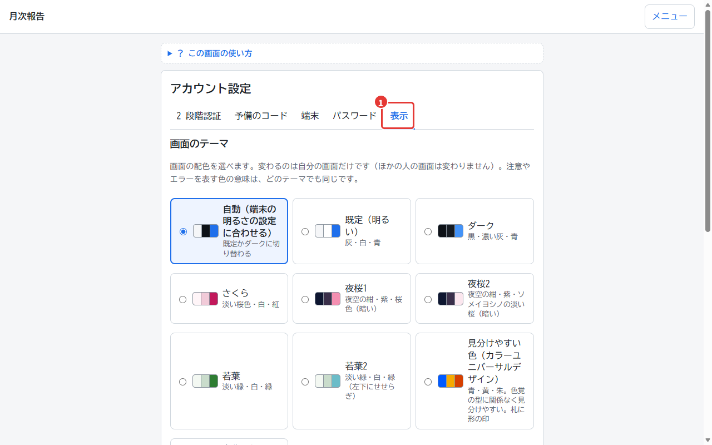
「アカウント設定」→「表示」で、画面の色（テーマ）を選び、「このテーマにする」（画面の下）を押します。変わるのは自分の画面だけです（ほかの人の画面は変わりません）。注意やエラーを表す色の意味は、どのテーマでも同じです。
| テーマ | 見た目 |
|---|---|
| 自動 | 端末の明るさの設定に合わせて、既定とダークが切り替わる（はじめはこれ） |
| 既定（明るい） | 灰・白・青 |
| ダーク | 黒・濃い灰・青 |
| さくら | 淡い桜色。桜の枝と、舞う花びら |
| 夜桜1 | 暗いテーマ。夜空に満月と星、桜の枝と花びら |
| 夜桜2 | 夜桜1 の桜を、白に近いソメイヨシノの色にしたもの |
| 若葉 | 淡い緑。若葉の枝、舞い落ちる若葉、木漏れ日 |
| 若葉2 | 若葉の左下に、せせらぎが流れる |
| 見分けやすい色（カラーユニバーサルデザイン） | 色が見分けにくい人にも見分けやすい配色。札に形の印が付く（下の 10.2） |
| 自分の色 | 土台（明るい／暗い）・強調の色・背景の色を自分で選ぶ。文字が読みにくくなる組み合わせのときは注意が出る（保存はできる） |
- 端末の設定で画面の動きを減らしている（Windows の「アニメーション効果」をオフ、iPhone の「視差効果を減らす」、Ubuntu の「設定」→「アクセシビリティ」の「アニメーションを減らす」など）と、花びらや若葉は舞わず、せせらぎも止まります（枝やせせらぎの絵は出ます）。
- 印刷するときは、どのテーマでも白い背景で印刷されます。
- このマニュアルの画像は、既定（明るい）のテーマで撮っています。
10.2 見分けやすい色（カラーユニバーサルデザイン）
赤と緑、緑と黄などが見分けにくい人（色覚の多様性）にも、状態を見分けやすくしたテーマです。だれが選んでもかまいません。「状態の札の色が似ていて分かりにくい」と感じたら、試してください。
- 色は、青（済み・ボタン・リンク）、黄（注意・待ち）、朱（エラー・限定）で分けています。赤と緑の対比は使いません。
- 文字と背景の明るさの差を大きくしています。
- 色だけでなく、札の頭の印と枠の線でも見分けられます。
| 印 | 意味 | 出るところ |
|---|---|---|
| － | 未作成 | 提出状況・ホーム |
| ✎（点線の枠） | 下書き | 自分の報告・提出状況 |
| ● | 提出済み | 提出状況・報告の詳細 |
| ✓ | 確認完了・解決・完了 | 提出状況・コメント・要望・依頼 |
| … | 待ち（未チェック・回答待ち・未受付） | 提出状況・コメント・要望・依頼 |
| ◆ | 変わった・回答あり・対応中 | 報告の詳細・コメント・要望・依頼 |
| ! | 注意（客先名らしい言葉など） | 提出状況・報告の詳細 |
| ＊ | 必須 | 報告の作成 |
| ■ | 限定 | 報告の作成・詳細 |
| ◇（点線の枠） | 社外秘 | 報告の作成・詳細 |
| × | エラー・ログインの失敗 | 画面の上の知らせ・記録 |
- 提出状況の棒は、斜線の模様で出します（確認完了は細い逆向きの斜線）。
- キーボードで項目を選んでいるところは、太い黄色の枠で示します。
11. 困ったとき
| 困ったこと | 対処 |
|---|---|
| 「ログイン ID またはパスワードが違います」と出る | 入力を確かめる。日本語の入力になっていないか確かめる（0.4）。忘れたときは 2.4 |
| 「しばらくログインできません」と出る | 15 分ほど待つ（2.5）。急ぐときは管理者に解除を頼む |
| 状態の札の色が見分けにくい | アカウント設定の「表示」で「見分けやすい色」を選ぶ（10.2） |
| 「コードが違います」と出る | 認証アプリの最新の 6 桁を入れる。スマートフォンの時刻が合っているか確かめる（スマートフォンの設定で、日付と時刻を「自動」にする） |
| 機種変更で認証アプリが使えない | 予備のコードでログインし、アカウント設定で 2 段階認証を設定し直す |
| 認証アプリも予備のコードも使えない | 管理者に 2 段階認証の初期化を頼む |
| 「一定時間操作がなかったため、ログアウトしました」と出る | ログインし直す。報告は自動で下書き保存されている |
| 「所属の課が設定されていません」と出る | 管理者に所属の課の設定を頼む |
| 選びたい案件がない | 課長か管理者に案件の登録を頼む |
| 報告を直せない | 確認完了の報告は直せない。課長に完了を戻してもらう |
| 出力の画面に「PC から行ってください」と出る | PC のブラウザーで開く |
| 画面が開かない・「サーバーが見つかりません」と出る | アドレスを確かめる（0.2）。ほかのサイトも開けないときは、PC のネットワーク（画面の右上）を確かめる |
| ボタンを押しても何も起きない・画面が崩れている | Ctrl + Shift + R で読み込み直す。直らないときは、ブラウザーを閉じて開き直す |
| 文字が小さくて読みにくい | Ctrl + + で大きくする（0.3） |
| 出力したファイルが見つからない | 「ダウンロード」フォルダーを見る（0.5） |
| CSV を開くと文字化けする | 12.3 の手順で、文字エンコーディングに「Unicode (UTF-8)」を選んで開き直す |
| 使い方が分からない | 画面の上の「？ この画面の使い方」、メニューの「よくある質問」のチャットで聞く。見つからないときは、課長・確認者は「質問として送る」、部下は課長・確認者に聞く |
12. Linux の PC で使うときの注意
12.1 ブラウザー
Firefox・Google Chrome・Chromium の新しい版を使ってください。特別な設定やプラグインはいりません。開き方は 0.1 です。 「この端末を記憶する」は、ブラウザーの Cookie で覚えています。Cookie を消す設定やプライベートウィンドウでは、毎回コードを聞かれます。
12.2 PDF に保存する（印刷用画面）
- 出力（6.4）で、形式に「印刷用画面」を選んで出力する。
- 出てきた画面の「印刷する（PDF として保存）」を押す（または
Ctrl+P）。印刷の画面が開きます。 - 保存先を PDF にする。
- Firefox: 右側の「プリンター」の欄を押して「PDF に保存」を選ぶ。
- Google Chrome・Chromium: 右側の「送信先」の欄を押して「PDF として保存」を選ぶ。
- 印刷の画面の形が違い、「ファイルに出力」（版によっては「ファイルへ出力」）という行があるときは、それを選び、出力形式を「PDF」にします。
- 「保存」（「ファイルに出力」のときは「印刷」）を押す。
- 保存する場所とファイルの名前を聞かれるので、場所（例: 「ダウンロード」）を選び、名前を確かめて「保存」を押す。
- 横に長い表は、印刷の画面の「向き」（Firefox は「方向」）を「横」にすると収まりやすくなります。
- 紙に印刷するときは、3. でプリンターを選んで「印刷」を押します。社外秘の資料なので、プリンターに置き忘れないでください。
12.3 CSV を開く・作る
出力した CSV は UTF-8（BOM 付き）、改行は CRLF、値はすべて " で囲んであります。
LibreOffice Calc で開く
- 「ファイル」（0.5）で「ダウンロード」を開き、CSV のファイルを右クリックして「別のアプリケーションで開く」→「LibreOffice Calc」を選ぶ（ダブルクリックで Calc が開く PC では、ダブルクリックでかまいません）。
- 「テキストのインポート」の窓が開くので、次のように選ぶ。
- 「文字エンコーディング」: 「Unicode (UTF-8)」
- 「区切りのオプション」: 「区切る」を選び、「コンマ」にだけチェックを付ける
- 窓の下の見本に、日本語が正しく出て、列が分かれていることを確かめる
- 「OK」を押す。
端末で見る: less や cat でそのまま読めます。行末の CR が気になるときは tr -d '\r' < 入力.csv > 出力.csv で取り除けます。
CSV を作る（組織の一括の入れ替え 9.4 で取り込むとき）: UTF-8 で保存してください（BOM はあってもなくてもかまいません）。 LibreOffice Calc で保存するときは、次のようにします。
- 「ファイル」→「名前を付けて保存」を押す。
- 下の「ファイルの種類」を「テキスト CSV (.csv)」にする。
- 「フィルター設定を編集する」にチェックを付けて「保存」を押す（形式を確かめる窓が出たら、「テキスト CSV」の形式を使うほうのボタンを押す）。
- 出てきた窓で、「文字エンコーディング」を「Unicode (UTF-8)」、「フィールドの区切り」を「,」にして「OK」を押す。
12.4 Excel 形式（.xlsx）
LibreOffice Calc でそのまま開けます。「ダウンロード」フォルダー（0.5）のファイルをダブルクリックするか、右クリックして「別のアプリケーションで開く」→「LibreOffice Calc」を選びます。 値はすべて文字列のセルで入っているので、数値として計算したいときは、Calc で列の書式を変えてください。 出力したファイルは社外秘です。使い終わったら、「ダウンロード」フォルダーから消してください（ファイルを右クリックして「ゴミ箱へ移動」。そのあと、ゴミ箱も空にします）。
13. 通勤定期代の精算（全員。月次報告とは別）
通勤定期代の「交通費・通勤定期代精算書」を、このシステムで作って、総務の様式のままの Excel のファイル（.xlsx）で受け取れます。受け取ったファイルは、これまでどおり提出してください。
- 受け付けるのは通勤定期だけです。 通勤実費・業務交通費・その他の交通費は、別のシステムで申請してください（このシステムでは登録できません）。
- 精算書を見られるのは、作った自分だけです。 課長・確認者・システム管理者も見られません。承認の流れもありません。
- 通勤定期の締め日は、その月の末日です。
- 入力はスマートフォンでもできます。Excel のファイルを受け取るのは PC だけです（スマートフォンにファイルを残さないため）。
13.1 精算書を作る

- 右上の「メニュー」を押し、見出し「精算」の「通勤定期代の精算」（図の 1）を押す。

- 「＋ 新しく作る」（図の 2）を押す。
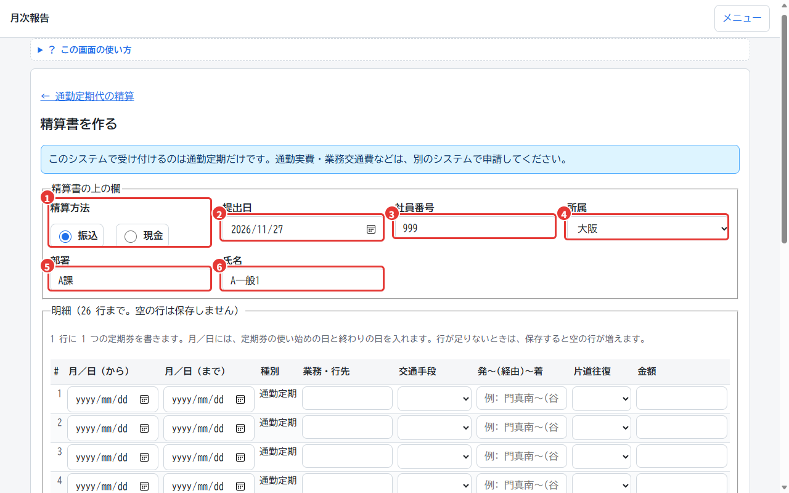
- 精算書の上の欄を入れる。
- 図の 1: 精算方法（振込・現金）
- 図の 2: 提出日（はじめは今日が入っています）
- 図の 3〜6: 社員番号・所属（大阪・東京）・部署・氏名。部署と氏名には、はじめは所属の課と表示名が入っています。2 回目からは、前に作った精算書と同じ値が入ります。
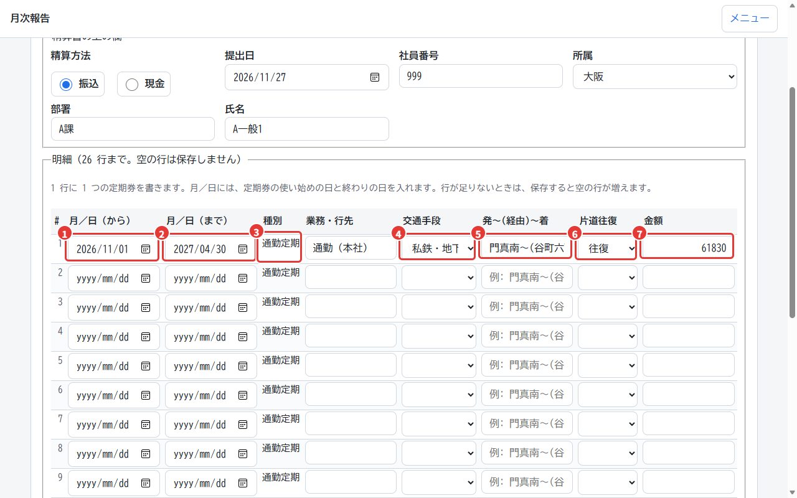
- 明細に、1 行に 1 つの定期券を書く。
- 図の 1・2: 月／日。定期券の使い始めの日と終わりの日を入れます（欄を押すと日付を選べます。半角で
2026/11/01のように打ってもかまいません）。 - 図の 3: 種別は「通勤定期」に決まっています（選べません）。
- 図の 4: 交通手段（ＪＲ・私鉄・地下鉄・バス・タクシー・その他）を選ぶ。
- 図の 5: 発～(経由)～着（例: 門真南～(谷町六丁目)～天王寺）。業務・行先は空でもかまいません。
- 図の 6・7: 片道か往復と、金額（円。数字だけ）。
- 明細は 26 行まで書けます（様式の 13 行 × 2 枚）。行が足りないときは、一度保存すると空の行が増えます。空の行は保存しません。
- 図の 1・2: 月／日。定期券の使い始めの日と終わりの日を入れます（欄を押すと日付を選べます。半角で

- 小計（図の 1）と合計（図の 3）は、金額を入れると自動で計算されます。仮払いがあれば、図の 2 に入れます（合計から引きます）。
- 「保存」（図の 4）を押す。入れ忘れや誤りがあると、画面の上に赤で出ます（入れた値は残っているので、直してもう一度「保存」を押します）。
13.2 総務の様式の Excel で受け取る（PC）

- 保存すると「精算書を保存しました」と出ます。「精算書の Excel を受け取る（.xlsx）」（図の 1）を押す。
- ファイル（
<社員番号>_交通費通勤定期代精算書_<提出日>.xlsx。例:999_交通費通勤定期代精算書_2026-11-20.xlsx）が「ダウンロード」フォルダーに入ります（0.5）。 - ファイルを開くと、総務の様式（交通費・通勤定期代精算書）に、入れた内容が入っています。明細が 13 行を超えると、No.2 の欄に続きが入ります。小計・合計は様式の式で計算されます。支払日・印・受付の欄は空のままです。
- LibreOffice Calc でも Excel でも開けます（12.4）。印刷するときは、開いたソフトの印刷（
Ctrl+P）で印刷するか、PDF に保存します。
- LibreOffice Calc でも Excel でも開けます（12.4）。印刷するときは、開いたソフトの印刷（
13.3 精算書を直す・写す・消す

- 一覧の「開く」（図の 1）で、保存した精算書を直せます。「Excel」（図の 2）で、すぐに Excel のファイルを受け取れます。
- 定期券を更新するときは、前の精算書の「写して新しく作る」（図の 3）を押すと、同じ内容で新しい精算書を作れます（提出日は今日、仮払いは空になります）。日付と金額を直して保存してください。
- 消すときは、精算書を開いて、いちばん下の「この精算書を削除」を押します。消した精算書は元に戻せません。
14. 目標管理シート（全員。月次報告とは別）
会社の目標管理制度の「目標管理評価シート」を、このシステムで書いて評価し、会社の様式のままの Excel のファイル（.xlsx）で受け取れます。
- 評価期間は 10 月 1 日〜翌 9 月 30 日です。年度の始めに目標を書き、中間（3 月末）と最終（9 月末）に報告と本人評価を書きます。
- シートを見られるのは、本人と、その課の課長・課長代理だけです（課長代理は一般・主任の人のシートだけ）。同じ課のほかの人・主任・システム管理者は見られません。
- 本人は目標・報告・本人評価を、課長は配点と上長評価を入れます。課長代理は、読んでコメントします。
- コメントと面談の記録は、あとから直したり消したりできません（監査のため）。直したいことは、新しく書いて残してください。
- 提出は、これまでどおり課長がまとめて管理部へ出します（課長が Excel のファイルを受け取ります）。
14.1 シートを作る（本人）
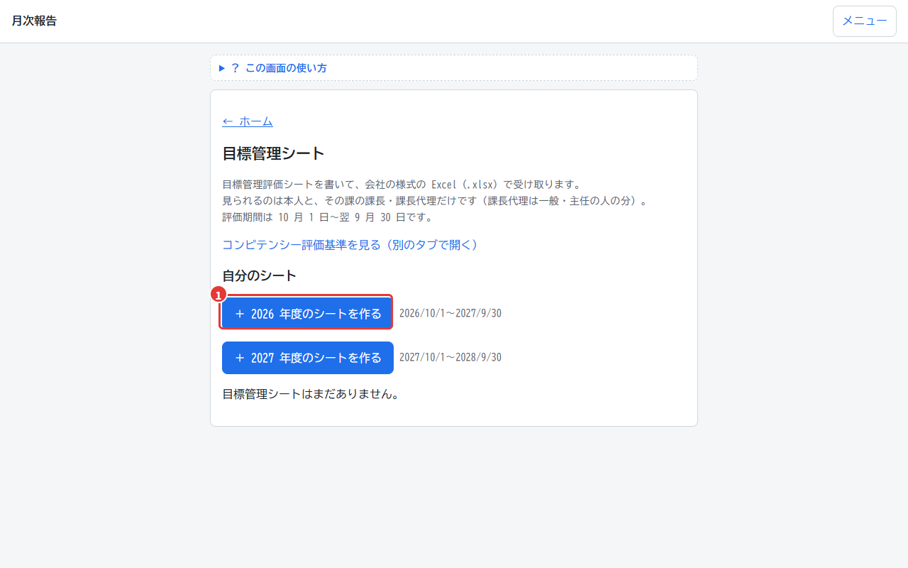
- メニューの見出し「目標管理」の「目標管理シート」を開き、「＋ （年度） 年度のシートを作る」（図の 1）を押す。次の年度の目標を早めに書くときは、次の年度のボタンを押します。
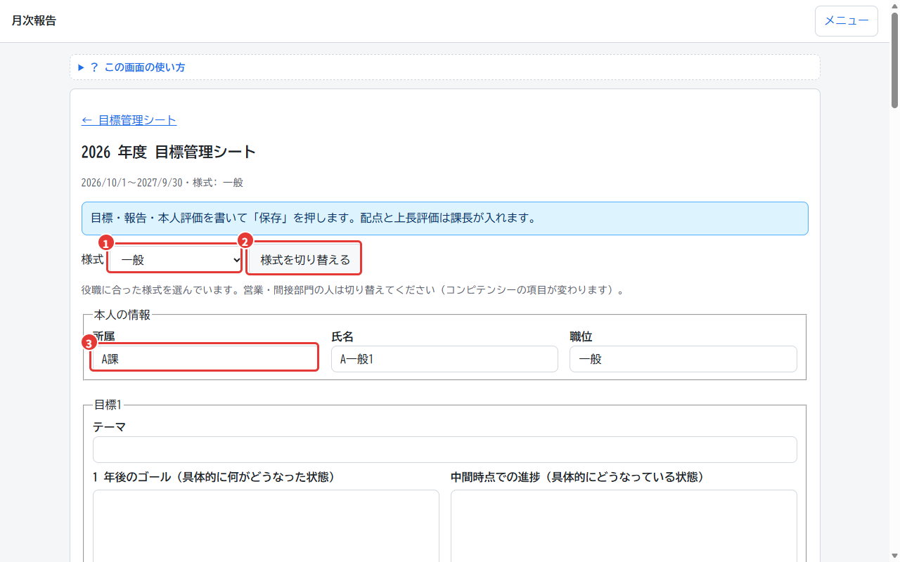
- 様式（図の 1）は役職で決まります。一般の人は「一般」、主任・課長代理は「リーダー・課長代理」の様式で、選び直せません。課長・部長だけは、この場所に様式を選ぶ欄が出るので、営業・間接部門の人は選び直して「様式を切り替える」を押します（コンピテンシーの項目が変わります）。様式は、保存したあとは変えられません。
- 所属・氏名・職位（図の 2）を確かめる。課長以上・営業の様式では、業績目標の計画と実績（千円）も入れます。
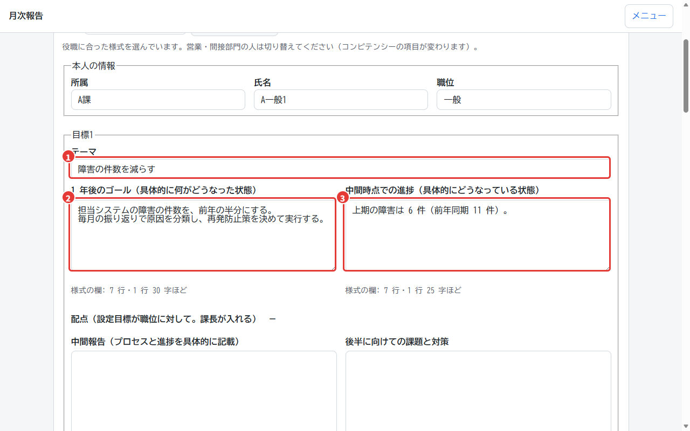
- 目標 1・2 のテーマ（図の 1）、1 年後のゴール（図の 2）を書く。中間時点での進捗（図の 3）は、中間のときに書きます。
- 欄の下の「様式の欄: 7 行・1 行 30 字ほど」は、会社の様式の枠に収まる長さのめやすです。長すぎると、保存のときに知らせます（行を減らすか、短くしてください）。
14.2 中間・最終の報告と本人評価（本人）
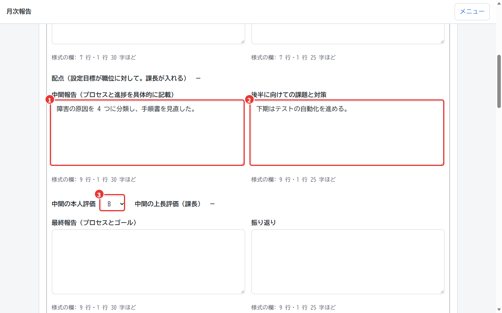
- 中間のとき: 中間報告（図の 1）と、後半に向けての課題と対策（図の 2）を書き、中間の本人評価（図の 3。A・B・C1・C2・C3・D・E）を選ぶ。
- 最終のとき: 同じように、最終報告・振り返り・最終の本人評価を書く。
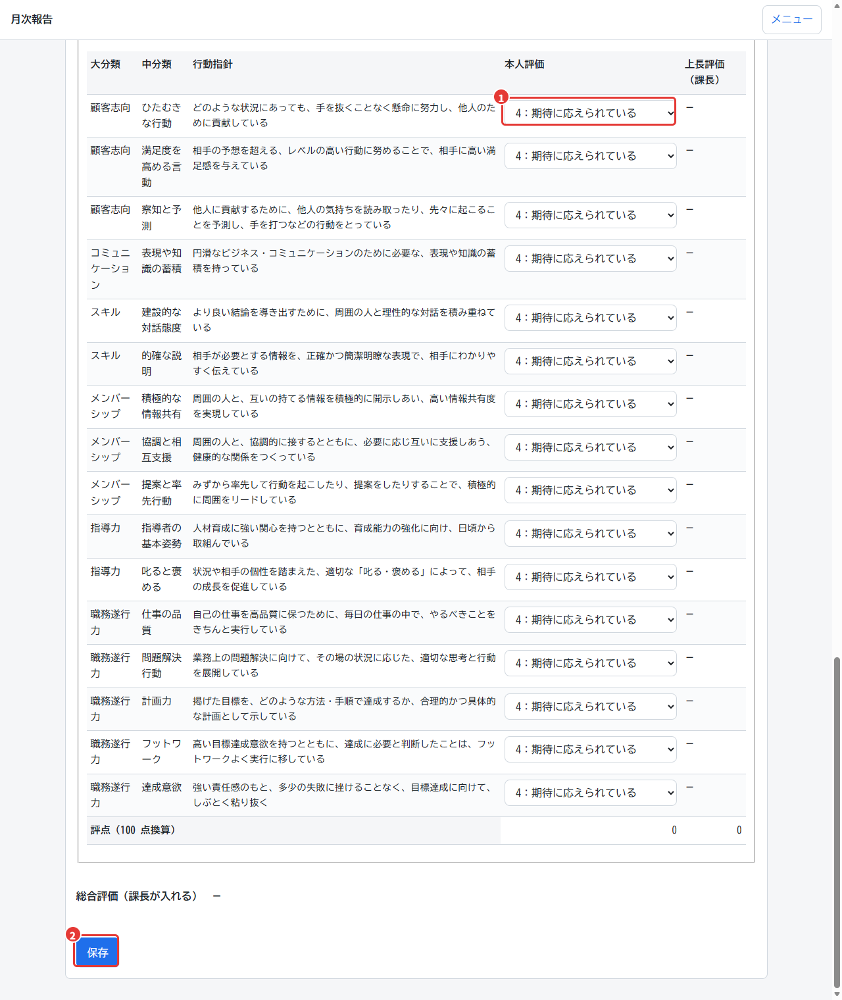
- コンピテンシー評価（行動特性評価）の本人評価（図の 1。5：満足できる結果 〜 0：評価に値せず）を、項目ごとに選ぶ。
- 「保存」（図の 2）を押す。何度でも書き直して保存できます。
- 点の付け方に迷ったら、コンピテンシー評価の欄の上の「コンピテンシー評価基準を見る（別のタブで開く）」を押すと、会社の評価基準（システム・ヘルプデスク・管理職登用基準・職能レベル定義）が別のタブで開きます。上のタブで切り替えて見ます。表が画面に入りきらないときは、表の上のつまみ（横スライド）を左右に動かすか、◀ ▶ を押すと、表が横に動きます。

- 保存すると、「目標管理評価シートの Excel を受け取る（.xlsx）」（図の 1）で、様式に書いた内容を入れたファイルを受け取れます（PC だけ）。評点（配点 × 評価の係数、コンピテンシーの 100 点換算）は様式の式で計算されます。
14.3 評価する（課長）
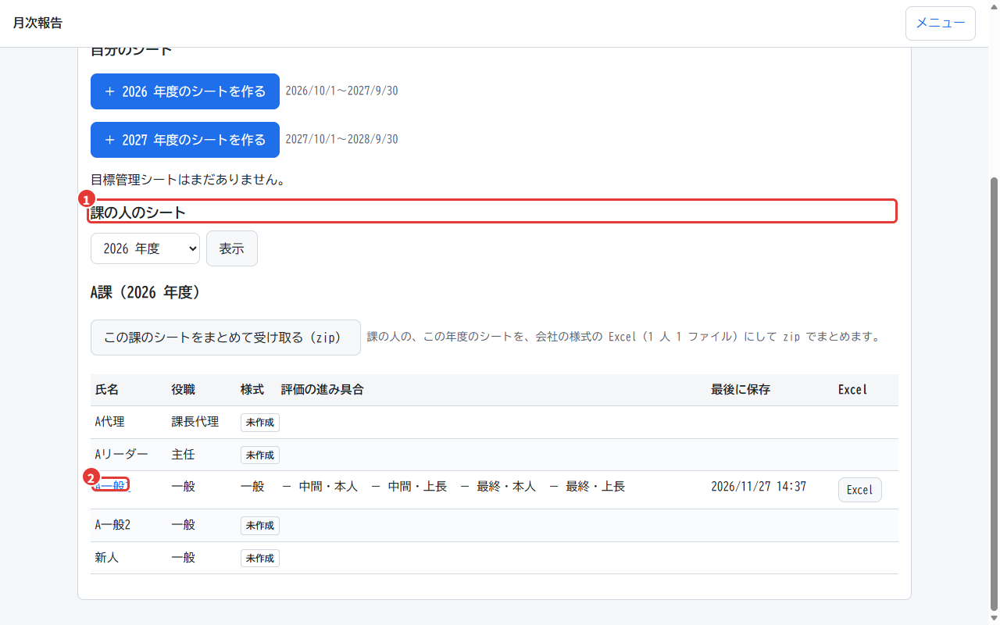
- 「目標管理シート」の下の「課の人のシート」（図の 1）に、課の人が並びます。年度を選んで「表示」を押すと、その年度のシートと、評価の進み具合（✓ が入ったもの）が出ます。名前（図の 2）を押すと、シートが開きます。まだ作っていない人には「未作成」と出ます。
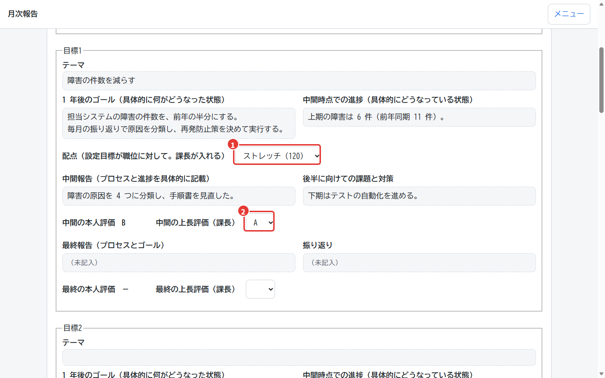
- 目標ごとに、配点（図の 1。設定目標が職位に対して ストレッチ 120／適正 100／物足りない 60）と、中間・最終の上長評価（図の 2）を選ぶ。本人が書いた欄は直せません（直してほしいことは、コメントか面談で伝えます）。
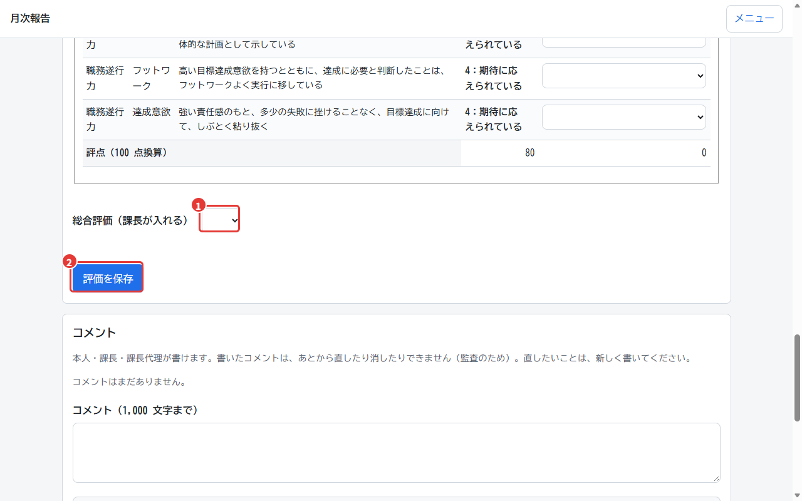
- コンピテンシーの上長評価と、総合評価（図の 1）を選び、「評価を保存」（図の 2）を押す。
- 管理部へ出すときは、「課の人のシート」の一覧から受け取ります（PC だけ）。
- 1 人ずつ: その人の行の「Excel」を押す（シートを開いて、上の「目標管理評価シートの Excel を受け取る（.xlsx）」を押しても同じです）。
- まとめて: 一覧の上の「この課のシートをまとめて受け取る（zip）」を押すと、その年度の課の人のシートが、1 人 1 ファイルの Excel になって zip にまとまります（
目標管理評価シート_<年度>年度_<課の名前>.zip）。zip のファイルは、右クリックして「ここで展開」（Windows は「すべて展開」）で開きます。 - 課長代理の一覧には、この 2 つは出ません。
14.4 コメント・面談の記録（本人・課長・課長代理）

- シートの下の「コメント」の欄（図の 1）に書いて「コメントする」（図の 2）を押すと、本人・課長・課長代理が読めます。
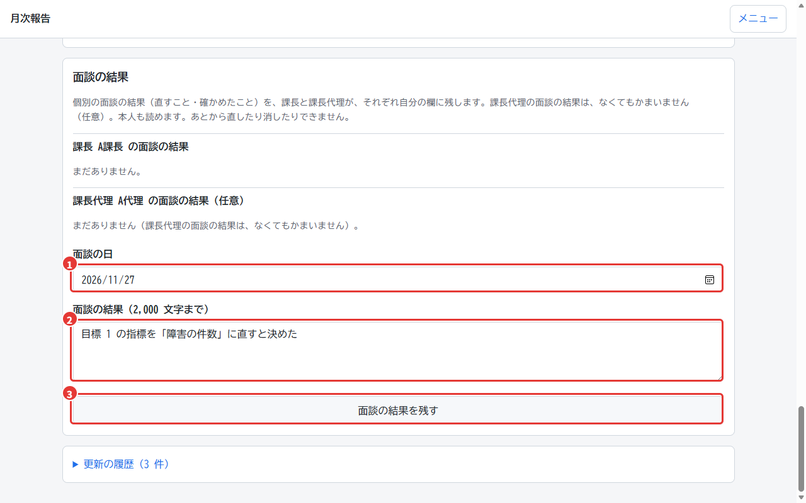
- 「面談の結果」は、課長と課長代理の一人ずつに欄が分かれています（その人のシートを見る課長代理が 2 人いれば、課長と合わせて 3 つの欄）。個別の面談をしたら、自分の欄（「課長 （名前） の面談の結果」など）で、面談の日（図の 1）と、面談の結果（図の 2）を書いて「面談の結果を残す」（図の 3）を押します。ほかの人の欄には書けません。本人も読めます。課長代理の面談の結果は、なくてもかまいません（任意）。
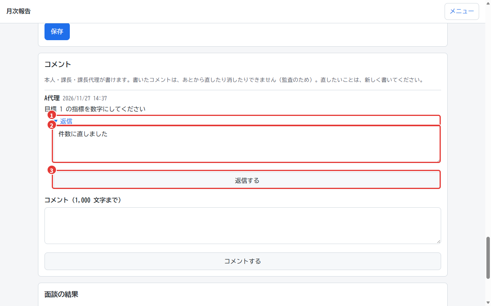
- コメントに答えるときは、コメントの下の「返信」（図の 1）を押し、文（図の 2）を書いて「返信する」（図の 3）を押します。
- シートのいちばん下の「更新の履歴」を開くと、だれが・いつ保存・コメント・面談の記録をしたかが見られます。